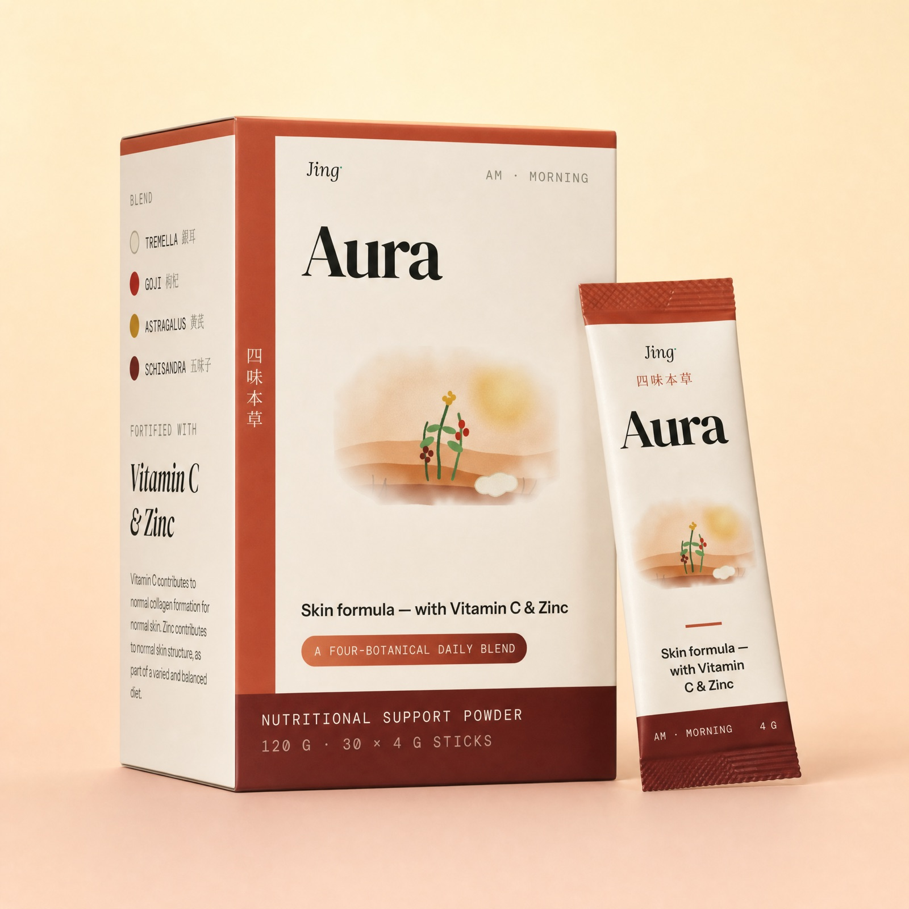

Jing means essence.
In Traditional Chinese Medicine, 精 (jīng) is the deepest of the three treasures — the vital essence you’re born with and spend a lifetime preserving. It felt like the only honest name for a company about nourishing skin from within.
Essence, breath, spirit
Jīng · Essence
The foundational substance of the body — what we set out to nourish. Our name, and our north star.
Qì · Vital energy
The animating force. Astragalus, our qi-tonic botanical, is here for exactly this reason.
Shén · Spirit
The mind and glow that show on the surface. Radiant skin, in the old texts, was never only skin-deep.

A grandmother’s soup, and a scientist’s scepticism
Jing began in a Hong Kong kitchen, with a pot of tremella soup that our founder’s grandmother made every winter — and with a nagging question she couldn’t shake at her lab bench: which parts of this are real?
She loved the tradition. She also knew that “ancient wisdom” is used to sell an enormous amount of nonsense. So she set an uncomfortable rule: keep the heritage botanicals, but never let the marketing outrun the evidence. Say plainly what regulators have authorised. Label everything else as tradition or as active research — honestly, on the label.
The result was Aura: four botanicals with centuries behind them, two nutrients with regulators behind them, and a label that respects your intelligence.
Four principles, non-negotiable
Evidence over hype
We make exactly two efficacy claims, both authorised, both on the label. If new human evidence emerges for a botanical, we’ll add it to the ladder — not before.
Radical transparency
Full doses, full ingredient list, lot number printed on every box. No proprietary blends hiding a pinch of something behind a wall of filler.
Heritage, respected
We work with the Chinese materia medica as a rich, living tradition — not a costume. Botanicals are chosen for real standing, then sourced and tested rigorously.
Less, but better
One product, done properly, beats a shelf of half-formulated ones. A 4 g daily stick you’ll actually keep up, in a box that lasts a full month.